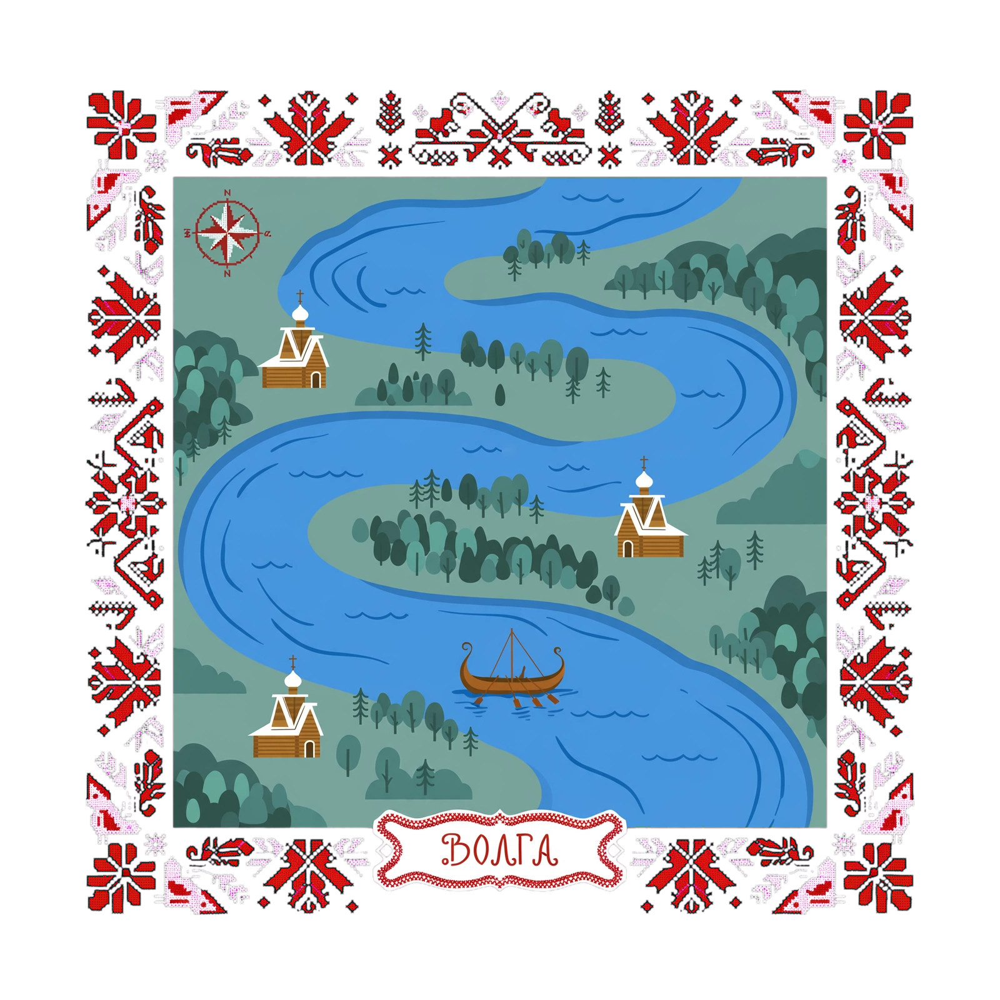
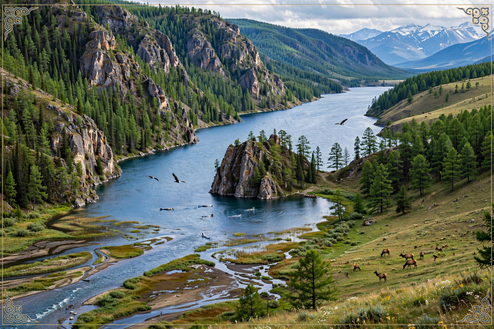

Module 0: Geography and Environment — Day 1
1. Topic Preview & Warm-Up
Topic: География и окружающая среда
Warm-up question(s):
-
Что вы знаете о географии России?
-
Где находится Волга?
-
Чем известен север России?
2. Listening Comprehension — Passage 1
Волга: символ России и самая большая река Европы

Pre-Listening
Vocabulary:
- Возвышенность – highland, elevated area
- Заволжье – region beyond the Volga (less commonly known term)
- Поволжье – Volga region
- Дельта – delta (river delta)
- Приток – tributary
- Жемчужина – pearl (used metaphorically as "gem" or "highlight")
- Волок – portage (route for transporting boats/cargo between rivers) [волочить = to drag]
- Исток – source
- Родник – spring
- Устье – mouth of a river
Comprehension check (multiple choice):
- What is the significance of the Volga River in Russia?
- A) It is a small river used mainly for fishing.
- B) It symbolizes Russia and connects different regions.
- C) It flows entirely within Tver Oblast.
-
D) It is the only river in Russia with a delta.
-
What does the term "Заволжье" refer to?
- A) The upper forested part of the Volga
- B) The low area on the opposite side of the Volga from the high right bank
- C) The delta region of the Volga
-
D) The steppe region south of Samara
-
Which feature of the Volga delta is highlighted in the text?
- A) Its network of canals
- B) The Astrakhan lotus fields
- C) The portage routes
-
D) The largest bridge
-
Why is the Volga called the «главная улица» of Russia?
- A) Because it has the longest bridge in Europe
- B) Because it historically served as a main transport and trade route
- C) Because it flows exclusively through cities
-
D) Because it has many lotus fields
-
What is stated in the segment about the Volga's role in Russian culture?
- A) It only serves multiple economic purposes.
- B) It unites diverse peoples and regions of Russia.
- C) It is a foremost tourist attraction.
- D) It has no historical importance.
Listening
Transcript: Волга — символ России и самая большая река Европы. За 37 дней вода преодолевает путь от истока, родника в Тверской области до устья в Астраханской. Верхняя Волга — это густые леса Валдайской возвышенности. В среднем Поволжье особенно заметна разница между высоким правобережьем и низким Заволжьем. Южнее Самарской Луки начинаются степи Нижнего Поволжья.
Жемчужина дельты Волги — Астраханские лотосовые поля. Первый мост через Волгу длиной всего 3 метра, а самый большой в Ульяновске — почти 6 километров. Издавна Волгу называли «главной улицей» России. Сеть волоков, а позже каналов, соединяет её с Балтикой и Азовом. Самый крупный правый приток Ока - c Центральной Россией, самый большой левый приток — Кама, водный путь на Урал. Волга стала символом многонациональной России, объединив народы, живущие на её берегах.
Post-Listening
Discussion questions:
-
Что нового вы узнали о Волге?
-
Есть ли в вашей стране природный объект, который является ее "символом"?
-
Какие два способа связи Волги с морями упоминаются в отрывке?
3. Reading Comprehension — Passage 1

Pre-Reading
Warm-up question(s):
-
Любите ли вы путешествовать?
-
Какие виды туризма вы предпочитаете и почему?
-
Какие города или страны вы хотели бы посетить и почему?
Vocabulary:
- переживать бум — to experience a boom; to become rapidly more popular
- достойный маршрут — a worthwhile route
- покорять — to conquer; to successfully complete a challenging route
- горный серпантин — a winding mountain road
- велопоездка — a bicycle trip
- предгорье — foothill
- шаманский мыс — shamanic cape
- гравий — gravel
- сбавить давление — to reduce the pressure
- шина — tire
- переменчивая погода — changeable weather
- ветровка — windbreaker
- прогреваться — to warm up
- паром — ferry
- турбаза — tourist base; holiday camp
- источник — water source
- подстраиваться — to adapt
- закрепить вещи — to fasten belongings securely
- степь — steppe; a vast, mostly treeless grassland in Eurasia, similar to a prairie
- священный — sacred; holy
Comprehension check:
- What is the approximate length of the route from Irkutsk to Olkhon?
- A. About 100 kilometers
- B. About 200 kilometers
- C. About 300 kilometers
-
D. About 500 kilometers
-
Why do experienced cyclists advise reducing tire pressure on Olkhon?
- A. To ride faster on asphalt
- B. To make riding on sand easier
- C. To reduce the risk of being blown off course by strong winds
-
D. To prevent the tires from overheating during hot afternoons
-
When does the text recommend taking this route around Lake Baikal?
- A. March–April
- B. May–June
- C. July–August
-
D. October–November
-
Why is water mentioned in the route advice?
- A. Cyclists may have difficulty finding places to refill their drinking water.
- B. Cyclists are reassured they can drink directly from Lake Baikal throughout the trip, since it is a source of the purest water on earth.
- C. Cyclists need water to wash sand from their bicycles each evening.
-
D. Cyclists should be aware of the fact that even in summer water is cold in Baikal.
-
Where does the text recommend staying on Olkhon Island?
- A. In the village of Khuzhir, since affordable hotels are available there
- B. In central Irkutsk, since it has great infrastructure
- C. At Cape Burkhan, since it is a scenic place
- D. In the foothills near Lake Baikal, since there is an easy access to the lake
Reading
(Reading passage text to be added.)
Post-Reading
Discussion questions:
(To be added.)
4. Listening Comprehension — Passage 2
(To be added.)
5. Reading Comprehension — Passage 2
(To be added.)
6. Topical Discussion
(Synthesizing questions that pull together both listening and reading passages — to be added.)
7. Vocabulary Review
(Info-gap and translation exercise reviewing vocabulary from today's passages — to be added.)